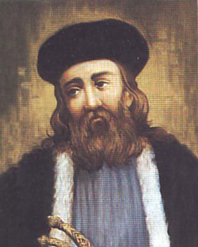

| Ησαΐας Δεσπότης Σαλώνων (1778-1821)  «Και πριν αρχίσει ο πόλεμος, θυμήσου, ο Ησαΐας να βγει ψηλά’ς το ξέφαντο κ’ εκείθε να κηρύξει τον φοβερό τον όρκο μας…» [Αριστοτέλης Βαλαωρίτης] Ο Επίσκοπος Σαλώνων Ησαΐας υπήρξε μια μεγάλη μορφή του Αγώνα. Γεννήθηκε στη Δεσφίνα, ήταν γιος ιερέα και έλαβε το όνομα Ησαΐας (αντί του βαπτιστικού του Ηλίας) όταν έγινε μοναχός. Πήρε τα πρώτα του γράμματα στα Σάλωνα και στο μοναστήρι του Οσίου Λουκά. Λέγεται ότι ο Αλή πασάς των Ιωαννίνων, σε ανταπόδοση ευεργεσίας που δέχθηκε από τον πατέρα του, τον βοήθησε να σπουδάσει στην Πόλη. Εκεί απέκτησε γνωριμίες με τους Φαναριώτες και συνδέθηκε με τον Πατριάρχη Γρηγόριο Ε΄, ο οποίος τον χειροτόνησε Επίσκοπο Σαλώνων, το έτος 1818. Λίγο αργότερα μυήθηκε στη Φιλική Εταιρεία. Στις 27 Μαρτίου 1821, στο μοναστήρι του Προφήτη Ηλία, ο Ησαΐας μετά τη δοξολογία και μαζί με τον Πανουργιά και τα παλικάρια του καθώς και τους προεστούς των Σαλώνων ύψωσαν τη σημαία της Επανάστασης στην περιοχή των Σαλώνων. Σκοτώθηκε στη μάχη της Χαλκομάτας, το 1821, μαζί με τον αδελφό του παπά-Γιάννη. Στη μνήμη τους είναι αφιερωμένοι οι ακόλουθοι στίχοι του Βαλαωρίτη "... Στ' αγέρι κρεμασμένα ωσάν καντήλια τ' ουρανού, αποβραδίς δυο φώτα εφάνηκαν στη σκοτεινιά... Κανείς δεν τάχε ανάψει... Κ' ένας που πέρασε απεκεί, καλόγερος, διαβάτης, κ' είδε το θάμμα κ' έδραμε, στη λάμψη δυο κεφάλια ηύρε που πλάγιαζαν γλυκά... τώνα του Παπαγιάννη και τάλλο του Δεσπότη του. Γονατιστός εμπρός τους έμειν' ο γέρος κ' έκλαψε. Τους έρριξε τρισάγιο τα φίλησε στο μέτωπο και με το δοκανίκι έσκαψε λάκκο κ' έθαψε τ' αχώριστα τ' αδέρφια. Βλογάει το χώμα τρεις φοραίς... Έκαμε το σταυρό του και χάνεται στην ερημιά... Εσβήστηκαν τα φώτα". |
||